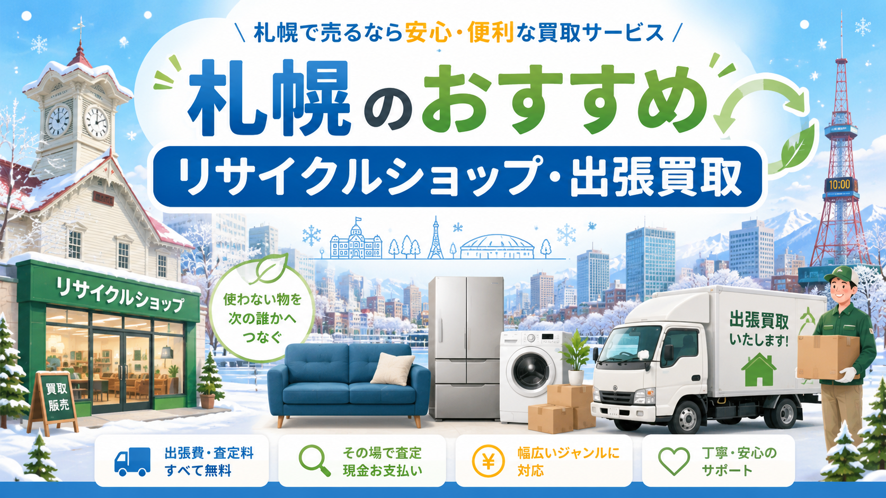

RECYCLE SHOP / SAPPORO
札幌市内・北海道内で利用しやすい大手＋地域密着型のリサイクルショップ6つを目的別に比較。家具・家電・ブランド品・本・楽器まで、売りたい品目別の選び方と、北海道ならではの広域対応・冬季搬出のポイントも解説します。

札幌で家具・家電・ブランド品・生活用品などを売りたいときは、リサイクルショップへの持ち込み買取と、自宅まで査定に来てもらえる出張買取のどちらを選ぶかが大切です。
特に札幌は市内が広く、中央区・北区・東区・白石区・豊平区・西区・手稲区・厚別区・清田区・南区など、住んでいるエリアによって店舗への持ち込みやすさが大きく変わります。冷蔵庫、洗濯機、テレビ、食器棚、ソファ、ダイニングテーブルなどの大型品は、自分で運び出すのが難しいため、出張買取を利用した方がスムーズです。
一方で、衣類、本、ゲーム、ホビー、ブランド品、小型家電などは、近くのリサイクルショップへ持ち込んだ方が早く査定してもらえる場合もあります。
この記事では、札幌で利用しやすいリサイクルショップ・出張買取サービスの選び方と、札幌エリアで検討しやすいおすすめショップを紹介します。
札幌でリサイクルショップを選ぶときは、単に「近い店舗」を選ぶだけでなく、売りたい品目に合っているかを確認することが重要です。
同じリサイクルショップでも、家具・家電に強い店舗、衣類やブランド品に強い店舗、本やゲームに強い店舗、工具やアウトドア用品に強い店舗など、それぞれ得意分野があります。
たとえば、大型家具や大型家電を売りたい場合は、出張買取に対応している店舗を選ぶのが基本です。冷蔵庫や洗濯機は年式によって査定額が大きく変わるため、製造年・メーカー・型番を事前に確認しておくと査定がスムーズです。
反対に、衣類や雑貨、本、ゲーム、ホビー用品などは、店舗へ直接持ち込める場合も多く、すぐに現金化したい人には店頭買取が向いています。
札幌ならではの注意点：雪の季節になると大型品の搬出が大変になるため、引越しや片付けの予定がある場合は、早めに査定予約をしておくのがおすすめです。
札幌で出張買取を利用した方がよいのは、次のようなケースです。
冷蔵庫、洗濯機、テレビ、電子レンジ、食器棚、ソファ、ベッド、ダイニングセットなど、自分で運ぶのが難しいものを売りたい場合は、出張買取が便利です。
また、引越し前の不用品整理、実家整理、遺品整理、生前整理、家まるごとの片付けなど、売りたいものが複数ある場合も出張買取に向いています。1点だけでは買取対象になりにくい品物でも、複数点まとめることで査定してもらいやすくなることがあります。
特に札幌市内で車を持っていない人や、マンション・アパートの上階に住んでいる人にとって、大型家具や家電を自力で運び出すのは大きな負担です。出張買取なら、自宅で査定から搬出まで対応してもらえるため、時間と手間を減らせます。
ただし、出張買取はすべての品物が対象になるわけではありません。年式が古い家電、状態が悪い家具、再販が難しい品物は買取不可になることもあります。事前に写真や型番を送って相談できる業者を選ぶと安心です。
店頭買取が向いているのは、持ち運びしやすい品物を売りたい場合です。
たとえば、衣類、バッグ、靴、アクセサリー、本、CD、DVD、ゲーム、フィギュア、小型家電、キッチン用品、アウトドア用品などは、近くの店舗へ持ち込むことでその場で査定してもらえます。
店頭買取のメリットは、予約なしで利用できる店舗が多く、査定後すぐに現金化しやすいことです。買い物や外出のついでに売れるため、少量の不用品整理には向いています。
一方で、査定額に納得できなかった場合は持ち帰る必要があります。また、大量の荷物を持ち込むと待ち時間が長くなることもあるため、引越し前の大量処分には出張買取の方が向いている場合があります。
札幌でリサイクルショップや出張買取を探す場合は、全国展開している大手チェーンと、札幌・北海道に強い地域密着型ショップの両方を比較するのがおすすめです。
大手チェーンは査定基準や受付体制が整っており、初めてでも利用しやすいのが特徴です。一方で、地域密着型ショップは札幌市内や近郊の出張対応に強く、大型家具・家電の相談がしやすい場合があります。
ここでは、札幌で検討しやすい代表的なショップを紹介します。
セカンドストリートは、衣類、バッグ、家具、家電、生活雑貨、ホビー用品、アウトドア用品など幅広いジャンルを扱う総合リユースショップです。
札幌市内にも複数店舗があり、店頭買取を利用しやすいのが特徴です。店舗数が多いため、自宅や職場の近くで買取を依頼しやすく、初めてリサイクルショップを利用する人にも向いています。
大型家具・家電については、出張買取の対象になる場合があります。冷蔵庫、洗濯機、テレビ、ソファ、ダイニングセットなどを売りたい場合は、事前に対象品目や年式条件を確認しておくと安心です。
特に、まだ使える家具や家電を処分費用をかけて捨てる前に、一度査定相談してみる価値があります。
衣類・雑貨・家具・家電などをまとめて売りたい人。札幌市内で近くの店舗に持ち込みたい人、大手チェーンの安心感を重視したい人。
オフハウス・ハードオフは、家具、家電、オーディオ、楽器、パソコン、ホビー、生活用品など幅広いジャンルを扱うリユースショップです。
札幌エリアでは、家具・大型家電の出張買取に対応する窓口もあり、大きな品物を売りたい人にとって利用しやすい選択肢です。
ハードオフ系は、オーディオ機器、楽器、パソコン、カメラ、ゲーム機、工具、ホビー用品などに強いイメージがあります。一方、オフハウスは家具・家電・生活用品・衣類などの買取に向いています。
売りたい品物のジャンルによって、ハードオフ、オフハウス、ホビーオフなど、どの店舗に相談するかを選ぶとよいでしょう。
家具・家電だけでなく、楽器、オーディオ、パソコン、ホビー用品なども売りたい人。大型品の出張買取を検討している人。
BOOKOFFは、本、漫画、CD、DVD、ゲームの買取で有名ですが、店舗によっては家電、ブランド品、ホビー、トレカ、衣類なども扱っています。
札幌市内では大型店舗もあり、本やゲーム、ホビー用品をまとめて売りたい人に便利です。出張買取センターの対象地域に札幌市が含まれているため、条件に合えば自宅からまとめて買取を依頼できる場合もあります。
ただし、出張買取では家具や大型家電などが対象外になる場合があります。売りたい品物が本・ゲーム・ホビー中心なのか、家具・家電中心なのかによって、他のショップと使い分けるとよいでしょう。
本、漫画、ゲーム、CD、DVD、ホビー用品などを大量に売りたい人。引越し前に本棚を整理したい人、ゲームやフィギュアをまとめて売りたい人。
なんでもリサイクルビッグバンは、北海道内で展開している総合リサイクルショップです。札幌エリアでは出張買取センターもあり、冷蔵庫、洗濯機、大型テレビ、食器棚などの大型家具・家電の出張買取に対応しています。
北海道エリアに強いショップのため、札幌市内だけでなく近郊エリアの相談がしやすい点も特徴です。
家具・家電のほか、アウトドア用品、スポーツ用品、工具、ブランド品、ホビー用品など、幅広いジャンルを扱っているため、家の中の不用品をまとめて相談したいときに便利です。
札幌で大型家具・大型家電を売りたい人。北海道エリアに強いリサイクルショップを探している人。引越しや実家整理で複数ジャンルの品物をまとめて売りたい人。
アウトレットモノハウスは、札幌市内を中心に展開している地域密着型のリサイクルショップです。家具、家電、自転車、生活用品など、日常生活で使う品物を幅広く扱っています。
札幌市内に複数店舗があるため、近くの店舗を利用しやすく、地域密着型のショップを探している人に向いています。
冷蔵庫、洗濯機、テレビ、ソファ、テーブル、ベッド、ダイニングセットなど、引越しや片付けで出やすい品物を相談しやすいのも特徴です。
札幌市内で家具・家電・生活用品を売りたい人。大手チェーンだけでなく、地元のリサイクルショップにも査定を依頼したい人。
ワンスタイルは、札幌市内で生活家電の買取・中古販売に強いリサイクルショップです。冷蔵庫、洗濯機、テレビ、電子レンジ、パソコン、エアコンなど、家電を中心に売りたい人に向いています。
特に、引越しや買い替えで家電をまとめて整理したい場合に相談しやすいショップです。大型家電は年式や状態が査定に大きく影響するため、事前にメーカー名、型番、製造年を確認しておくとスムーズです。
札幌で冷蔵庫・洗濯機・テレビなどの生活家電を売りたい人。家具よりも家電中心で査定を依頼したい場合に検討しやすいショップ。
※ 各社の取り扱い品目・出張買取対応の有無・対応エリアは店舗ごとに異なる場合があります。最新情報は各公式サイトをご確認ください。
札幌でリサイクルショップや出張買取を利用する場合、高く売れやすいのは需要が安定している品物です。
たとえば、製造年が新しい冷蔵庫、洗濯機、電子レンジ、炊飯器、テレビなどの生活家電は、状態が良ければ買取対象になりやすい傾向があります。単身者向けの家電セットは、春の引越しシーズン前後に需要が高まりやすいです。
家具では、状態の良いダイニングテーブル、食器棚、ソファ、チェスト、ブランド家具などが査定対象になりやすいです。ただし、大型家具はサイズや搬出経路によって買取可否が変わることがあります。
そのほか、ブランドバッグ、腕時計、貴金属、カメラ、楽器、工具、アウトドア用品、ゲーム機、フィギュア、スポーツ用品なども需要があります。
札幌ならではの需要：冬物家電、暖房器具、アウトドア用品、スキー・スノーボード用品など、季節性のある品物も需要が出やすいジャンルです。売る時期を意識すると、査定額に差が出ることがあります。
買取価格を少しでも上げたい場合は、査定前の準備が大切です。
まず、家具や家電はできる範囲で掃除しておきましょう。ホコリや汚れを落とし、付属品、リモコン、説明書、保証書、電源コードなどを揃えておくと印象が良くなります。
家電の場合は、メーカー名、型番、製造年を確認しておきます。冷蔵庫や洗濯機は本体の側面や内側、テレビは背面に型番シールが貼られていることが多いです。
家具の場合は、サイズを測っておくと事前相談がスムーズです。幅・奥行き・高さを伝えられると、業者側も搬出可否や再販可能性を判断しやすくなります。
また、1点だけで依頼するよりも、複数点まとめて査定してもらう方が出張買取の対象になりやすい場合があります。引越しや片付けの際は、売れそうなものをリスト化してまとめて相談するのがおすすめです。
リサイクルショップや出張買取では、すべての品物が買い取られるわけではありません。
製造年が古い家電、故障している家電、汚れや破損が大きい家具、においが強いソファやマットレス、組み立て家具の一部、再販が難しい大型家具などは、買取不可になることがあります。
また、ブラウン管テレビ、古いエアコン、状態の悪いベッド、使用感の強い布製家具などは、処分費用がかかる場合もあります。
買取不可になった場合に備えて、札幌市の大型ごみ回収や不用品回収サービスもあわせて確認しておくと安心です。ただし、まだ使えるものは処分する前にリユースできる可能性があるため、まずは査定相談してみるのがおすすめです。
札幌で出張買取を依頼する流れは、一般的に次のようになります。
まず、売りたい品物の写真、メーカー名、型番、製造年、サイズ、状態を確認します。次に、リサイクルショップや出張買取業者へ問い合わせを行い、買取対象になるかを確認します。
査定可能な場合は、訪問日時を調整します。マンションやアパートの場合は、エレベーターの有無、階数、駐車スペース、搬出経路なども伝えておくと当日の作業がスムーズです。
当日はスタッフが品物を確認し、査定額が提示されます。金額に納得できれば、その場で買取成立となり、搬出まで対応してもらえることが一般的です。
査定額に納得できない場合は、無理に売る必要はありません。複数社に相談して比較することで、より納得感のある売却がしやすくなります。
札幌で出張買取を利用する際は、対応エリアと出張条件を必ず確認しましょう。
札幌市内全域に対応している業者もありますが、南区や手稲区、清田区など一部エリアでは、品物の内容や点数によって対応可否が変わることがあります。札幌近郊の石狩市、江別市、北広島市、小樽市などは、業者によって対応範囲が異なります。
また、冬場は雪の影響で搬出作業や訪問スケジュールに影響が出る場合があります。大型家具・家電を売りたい場合は、引越し直前ではなく、余裕を持って予約しておくのがおすすめです。
出張費、査定料、キャンセル料の有無も事前に確認しておきましょう。無料査定と記載されていても、条件によっては費用が発生するケースがあるため、問い合わせ時に確認しておくと安心です。
札幌で不用品を売る場合、1社だけに依頼するよりも、複数社を比較した方が納得しやすくなります。
特に、家具・家電・ブランド品・ホビー用品・工具・アウトドア用品など、ジャンルが分かれる場合は、業者によって得意不得意があります。ある店舗では買取不可だった品物でも、別の店舗では買取対象になることもあります。
大型家具や家電は、出張対応の可否、搬出条件、年式基準、再販ルートによって査定結果が変わります。写真を送って事前査定できる業者を利用すれば、無駄な訪問を減らせます。
引越し、遺品整理、実家整理、家まるごとの片付けなどで大量の品物がある場合は、一括見積もりサービスを利用して複数の買取業者にまとめて相談するのも便利です。
札幌でリサイクルショップや出張買取を利用するなら、売りたい品物の種類に合わせてサービスを選ぶことが大切です。
衣類、本、ゲーム、ホビー、小型家電などは店頭買取が便利です。一方で、冷蔵庫、洗濯機、テレビ、ソファ、食器棚、ダイニングセットなどの大型家具・家電は、出張買取を利用した方がスムーズです。
セカンドストリート、オフハウス・ハードオフ、BOOKOFFのような大手チェーンに加えて、なんでもリサイクルビッグバン、アウトレットモノハウス、ワンスタイルのような札幌・北海道エリアに強いショップも比較すると、より自分に合った買取先を見つけやすくなります。
札幌はエリアが広く、季節によって搬出のしやすさも変わります。引越しや片付けの予定がある場合は、早めに査定相談を行い、複数社を比較しながら、できるだけ納得できる形で不用品を売却しましょう。
家まるごと、しっかり高く。LINEで写真を送るだけで仮査定OK。
最短即日でお伺いします。査定無料・キャンセル料無料。